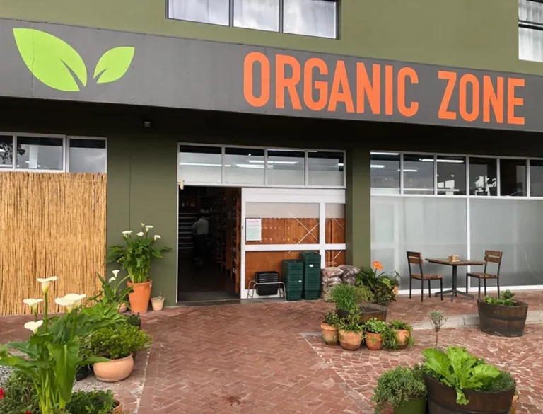

greenleaf organic food
Who we are?
Organic foods are products of holistic agricultural practices focusing on bio-diversity, soil health, chemical free inputs etc. with an environmentally and socially responsible approach that have been produced in accordance with organic production standards.
where we are?
Greenleaf organic food" is likely referring to The Greenleaf Olive Company, which is based in the Western Cape While you can find their products, including their high-quality extra virgin olive oil, in Johannesburg, the company's family-owned estate is located near Swellendam in the Western Cape.
